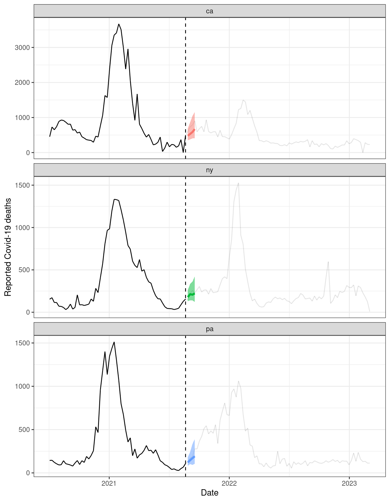

The total number of points possible for this homework is 46. The number of points for each question is written below, and questions marked as “bonus” are optional. Submit the knitted html file from this Rmd to Gradescope.
If you collaborated with anybody for this homework, put their names here:
Few notes about this homework
First, a few notes about this homework. This last homework is more open-ended than the previous homeworks and is something in between a regular homework and a project. You should do your best to make all of your work and your reasoning clear, well-written, and expository in nature. In the more open-ended parts, this will help us to identify rigorous thinking and assign marks accordingly.
This homework is an exercise in COVID-19 forecasting. You should know that, in true (prospective) COVID-19 forecasting, the situation is much harder than the one you are facing in this homework. This is because of data revisions: the forecasters in true (prospective) COVID-19 forecasting did not have access to the same data in real-time that you have access to now, in retrospect. Instead, they had access to preliminary data that was subject to revisions, sometimes very large and irregular ones, making forecasting much harder. You can see, for example, McDonald et al. (2021), for a discussion of this.
COVID-19 cases and deaths
First, download the files cases_deaths.csv and forecasts.csv from the course GitHub repo. The former contains weekly reported COVID-19 cases and death counts for every U.S. state, from July 4, 2020 to March 4, 2023. The latter contains 1-4 week ahead forecasts of weekly reported COVID-19 death counts for every U.S. state over that same time period. These forecasts were generated by the COVIDhub ensemble model, which is an ensemble of all qualifying forecast submissions to the U.S. COVID-19 Forecast Hub, and was the basis of official CDC communications during the pandemic. You can see Ray et al. (2022) for discussion of the ensemble model.
The code below loads in these data frames (which you can run once the downloaded files are in your working directory) and plots death curves along with one set of 1-4 week ahead forecasts (and 80% prediction intervals) for the each of CA, NY, and PA.
library(tidyverse)cases_deaths =read.csv("cases_deaths.csv")forecasts =read.csv("forecasts.csv")cases_deaths = cases_deaths |>mutate(date =as.Date(date))forecasts = forecasts |>mutate(target_date =as.Date(target_date))fc_date =as.Date("2021-08-21")states =c("ca", "ny", "pa")ggplot() +geom_line(data = cases_deaths |>filter(geo_value %in% states) |>mutate(alpha =ifelse(date <= fc_date-7, 1, 0.8)), # account for plotting# quirk here: line color for a segment assigned to the point on the leftaes(x = date, y = deaths, alpha = alpha)) +geom_vline(xintercept = fc_date, linetype =2) +geom_ribbon(data = forecasts |>filter(geo_value %in% states) |>mutate(forecast_date = target_date - ahead *7) |>filter(forecast_date == fc_date), aes(x = target_date, ymin = forecast_0.1, ymax = forecast_0.9,fill = geo_value), alpha =0.5) +geom_line(data = forecasts |>filter(geo_value %in% states) |>mutate(forecast_date = target_date - ahead *7) |>filter(forecast_date == fc_date), aes(x = target_date, y = forecast_0.5, color = geo_value), linewidth =1.25) +facet_wrap(vars(geo_value), scales ="free_y", ncol =1) +labs(x ="Date", y ="Reported Covid-19 deaths") +theme_bw() +theme(legend.position ="none")

AR and ARX models
(4 pts) For each state, compute the sample auto-correlation function for COVID-19 deaths over the time period July 04, 2020 through March 27, 2021. This period captures the “winter 2020 wave”. Average the auto-correlation (take an average per lag) across all of the states. Plot the state-averaged auto-correlation function.
Do the same, but for the sample cross-correlation function between COVID-19 deaths and COVID-19 cases. Plot the state-averaged cross-correlation function. Discuss what you see in these plots.
# CODE GOES HERE
(8 pts) For each state, separately, fit an AR model to directly forecast the death count at a horizon \(h\) from the latest three values: [ {t+h|t} = {k=0}^2 {h,k} , y{t-k} ] Do this for horizons \(h=1,2,3,4\), i.e., 1-4 weeks ahead. Note that you will thus fit 4 separate models per state.
Use time series cross-validation (CV) to evaluate forecasts from these AR models starting at a target date of April 3, 2021 and going through the end of the data set. You can do this by manually forming the lags yourself, fitting the AR model withlm(), and then manually implementing the time series CV loop, as we did in the regression lecture (weeks 3-4: “Regression and prediction”).
For each horizon (1-4 weeks ahead), report the mean absolute scaled error (MASE) from time series CV, averaged over all states. Plot the state-averaged MASE from the AR models as a function of horizon.
# CODE GOES HERE
(4 pts) Repeat the same as in Q2, but now use an ARX model to forecast deaths at horizon \(h\) from the latest three values, and also the latest three case counts (this is the the exogenous, or “X” part): [ {t+h|t} = {k=0}^2 {h,k} , y{t-k} + {k=0}^2 {h,k} , x_{t-k}. ] The rest should be the same: in the end, plot the state-averaged MASE from the ARX models as a function of horizon. Compare this result to what you saw in Q2.
# CODE GOES HERE
(2 pts) Surprised to see the forecasts from the ARX models perform worse? Plot the (say) 1-week ahead forecasts for California from the AR and the ARX model, overlaid on top of the reported death counts, and use this to derive a plausible explanation for why the ARX model performs worse.
# CODE GOES HERE
(4 pts) Refit the models AR and ARX models from Q2 and Q3 so that they each use trailing training windows of 12 weeks. Compare their state-averaged MASE curves relative to what you saw in Q2 and Q3.
# CODE GOES HERE
(Bonus) Disaggregate the MASE by major pandemic waves: the summer 2021 wave, Delta wave, and Omicron wave. You can choose the time boundaries by eye by looking at national data (sum of all state deaths). Thus you should get three separate MASE comparisons between the 4 models.
# CODE GOES HERE
ARIMA and ETS
(8 pts) Use the start of the data through March 27, 2021 in order to choose an ARIMA model. You should follow the diagnostic steps that we discussed in class (weeks 9-11: “Autoregressive integrated moving average models”), and it is easiest to do this on the national scale (sum over all state deaths). Fit this ARIMA model to each state, using ARIMA() from the fable package, and evaluate it with time series CV to make 1-4 week ahead forecasts, starting at a target date of April 3, 2021 and going through the end of the data set. (You may still want to implement the time series CV loop manually, instead of relying on stretch_tsibble(), as the latter may be too slow due to the large memory hit.) As before, plot the MASE from time series CV averaged over states, as a function of horizon.
# CODE GOES HERE
(6 pts) Fit two ETS models, using ETS() from the fable package: Holt’s linear trend and damped linear trend (each with additive errors). Evaluate them using time series CV, just as in Q7, plotting the state-averaged MASE as a function of horizon. Compare and discuss the MASE curves you have seen for all methods thus far.
# CODE GOES HERE
(4 pts) Compute the coverage of the 80% prediction intervals from the ARIMA and ETS forecasting models from Q7 and Q8, averaged over all states, as a function of horizon.
# CODE GOES HERE
(Bonus) Plot coverage for the ARIMA and ETS models from Q7 and Q8 a function of target date, averaged over all states, for each of 1-4 week ahead forecasts. (So you should end up with 4 plots, and 3 coverage curves per plot: 1 curve per model.) When do large dips in coverage occur?
# CODE GOES HERE
Bonus: geo pooling
(Bonus) Refit the AR and ARX models from Q5, with trailing training windows, but now pooling the data over all states. Thus, for each of 1-4 week ahead forecasting, you will just fit a single AR or ARX model. In order for this to make sense (as case and death counts from the states are on different scales, due to population differences), you will need to standardize the training data from each state before pooling it together to form one big training set, at each step of time series CV. By standardize, we mean center the data to have mean zero, and scale it to have unit variance (do this separately for cases and deaths). Making predictions will be a bit more tricky: you will need to save the centering and scaling factors so that you can then transform back to the proper scale (to the original scale of any given state). How do the MASE curves look like from these geo-pooled models, as a function of horizon?
# CODE GOES HERE
Bonus: other forecasters
(Bonus) Fit whatever other forecasters you want, and evaluate them with time series CV, over the same time period as in the previous questions. Make sure you only use the winter 2020 wave for diagnostic and exploratory work. Explain why you chose the models that you did, and discuss the MASE curves.
# CODE GOES HERE
Ensembling
(6 pts) For each of 1-4 week ahead forecasts, ensemble the predictions from the models you have fit thus far (2 AR models, 2 ARX models, 1 ARIMA model, 2 ETS models, plus any other forecasters you may have fit in Q12). Do so in two ways: take an average or median of forecasts (always for a single target). Compare the MASE of these ensemble models from time series CV on the same time period as in the previous questions. What do you see?
Now instead of simply reporting the average MASE over all states, plot the whole distribution of MASE values over all states (as a histogram), per horizon. Compare the ensemble models to one or two of the previous models (say the AR and ARX models). What do you see?
# CODE GOES HERE
(Bonus) Finally, compare the MASE and coverage of the COVIDhub ensemble model, whose 1-4 week ahead forecasts can be found in the forecasts data frame, to those from your ensembles. Recall that the COVIDhub ensemble was created in real-time with only access to partial data (subject to revision). How does it compare?